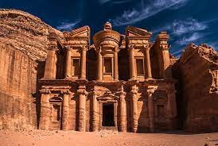

Explore the marvels of human architecture and engineering
The Great Wall of China
Petra, Jordan

Petra, originally known to its inhabitants as Raqmu, is a historical and archaeological city in southern
Jordan. It is famous for its rock-cut architecture and water conduit system. Another name for Petra is
the Rose City due to the color of the stone out of which it is carved.
Christ the Redeemer, Brazil
Christ the Redeemer is an Art Deco statue of Jesus Christ in Rio de Janeiro, Brazil, created by French
sculptor Paul Landowski and built by the Brazilian engineer Heitor da Silva Costa, in collaboration with
the French engineer Albert Caquot.
Machu Picchu, Peru
Machu Picchu is a 15th-century Inca citadel located in the Andes Mountains in Peru. It is situated at an
altitude of 2,430 meters above sea level. Machu Picchu was built by the Inca emperor Pachacuti as a
royal estate.
The Roman Colosseum, Italy
The Colosseum is an ancient amphitheater located in the center of Rome, Italy. It is the largest
amphitheater ever built and could hold up to 80,000 spectators. It was used for gladiatorial contests
and public spectacles such as animal hunts, executions, re-enactments of famous battles, and dramas
based on classical mythology.
Taj Mahal, India
The Taj Mahal is an ivory-white marble mausoleum on the south bank of the Yamuna River in the Indian city
of Agra. It was commissioned in 1632 by the Mughal emperor Shah Jahan to house the tomb of his favorite
wife, Mumtaz Mahal. The Taj Mahal is one of the most famous buildings in the world and is recognized as
a symbol of love and beauty.
Chichen Itza, Mexico
Chichen Itza is a large pre-Columbian archaeological site located in the Yucatán Peninsula of Mexico. It
was a major city of the Maya civilization from the 7th to the 10th century AD. The site exhibits a
multitude of architectural styles, reminiscent of styles seen in central Mexico and of the Puuc and
Chenes styles of the northern Maya lowlands.